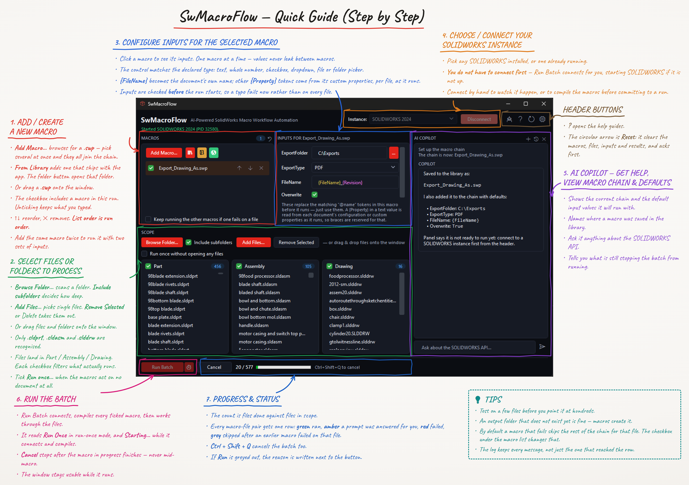

Chain multiple macros
Queue as many macros as you need, in the order they should run. Each selected file opens once, every ticked macro runs against it, then the file closes.
SwMacroFlow
A standalone Windows application that chains your VBA macros and runs them across whole folders of parts, assemblies, and drawings. It drives the SOLIDWORKS you already have installed — nothing is installed inside SOLIDWORKS itself.
Free, with every feature included. No account, no licence, no payment. Get the installer.

Every panel, in the order you use it: add your macros, pick the files, set the inputs, connect SOLIDWORKS, and run the batch. Open it full size and keep it beside you.

Behind the gear button: the theme, how hard to work your machine, which AI provider the Copilot talks to, and how to leave a batch running tonight. Marked up the same way.


SwMacroFlow keeps the workflow obvious: choose files, choose macros, review the run, then let SOLIDWORKS do the repetitive work.
Queue as many macros as you need, in the order they should run. Each selected file opens once, every ticked macro runs against it, then the file closes.
Browse a folder recursively, drag and drop, or add files one by one. Parts, assemblies, and drawings are sorted automatically.
SwMacroFlow runs beside SOLIDWORKS and drives any installed, licensed x64 version. It joins a session you already have open, or starts one, without registering anything inside SOLIDWORKS.
Use ready-to-run macros for common jobs such as export and cleanup, while keeping your own VBA macros beside them.
Ask Copilot to build a macro chain, scan a folder, or write a new macro. Destructive actions require your approval first. Bring your own API key — we do not supply one.
Save a setup and run it later through Windows Task Scheduler: once, daily, weekly, monthly, or every N minutes.
Spread one batch across two to four SOLIDWORKS instances that share the file list, each taking the next file as it comes free. Opening a document is the slow part of a batch and SOLIDWORKS does it one at a time, so a second instance puts a machine that was otherwise idle to work. Off by default; turn it on in Settings.
Give Copilot something to look at: a screenshot, a PDF drawing, a Word document, or a text, CSV, or JSON file. Paste an image straight into the chat, or pick a file.
Build the workflow once, run it across your files, and keep moving. Free, from the first run onwards.
Grab the latest Windows installer from this page. No account, no sign-up, and nothing to pay.
SwMacroFlow uses a per-user install, so no administrator rights and no elevation prompt are required.
Open the app and connect it to any installed and licensed x64 SOLIDWORKS version.
Add your macros, point at a folder, and hit Run Batch. Hand the setup to Copilot, or schedule it to run later.
Used SwMacroFlow on real work? Leave a rating and tell the next person what to expect. No account and no sign-up, same as everything else here.
No reviews yet. Yours would be the first.
There is no trial, no licence key, and no account. Download the installer and run your first batch.
Coming shortly
SwMacroFlow is free to download and use. AI Copilot needs an API key from a provider you choose, who bills you directly for your usage; we do not supply keys and never see yours. SwMacroFlow runs macros you supply against files you choose, so keep backups before large batches. See our terms and privacy policy.
SwMacroFlow is a standalone Windows application that works with any installed and licensed x64 SOLIDWORKS version. It drives the SOLIDWORKS session on your machine from outside, so nothing is registered or installed inside SOLIDWORKS itself.
Yes. SwMacroFlow is free to download and use, with every feature included: macro chaining, batch runs across folders, parallel batches across several SOLIDWORKS instances, the bundled macro library, AI Copilot, and Task Scheduler. There is no trial, no licence, no account, and nothing to buy. Donations are welcome but entirely optional, and change nothing about what you get.
Download the Windows installer straight from this page. There is no sign-up and no account, so nothing stands between you and the installer.
Yes. Every future version is free, and new builds arrive through the app's built-in auto-updater.
No. AI Copilot is bring your own key. You supply a key from the AI provider you choose, and that provider bills you directly for what you use. Your key is stored on your own machine and never reaches us.
Yes. SwMacroFlow can register saved setups with Windows Task Scheduler for one-time, daily, weekly, monthly, or every-N-minute runs.
Yes. Turn on parallel batches in Settings and SwMacroFlow runs the batch across two to four SOLIDWORKS instances, handing each one the next file as it comes free rather than splitting the list up front. It only applies when SwMacroFlow starts SOLIDWORKS itself — connecting to a session you already had open always uses just that one. Each instance takes its own licence seat and its own memory, so on large assemblies two or three is usually as far as a workstation gains.
Yes, on as many computers as you like. There is no licence and no activation, so nothing limits where you install it.
No. SwMacroFlow uses a per-user installation and is designed to run without an administrator elevation prompt.